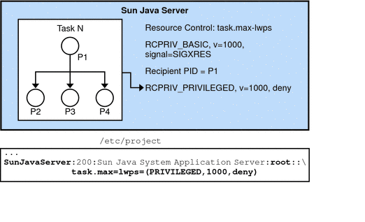

|
|||
|
1. Resource Management in the Solaris Operating System 3. Using the C Interface to Extended Accounting 4. Using the Perl Interface to Extended Accounting Resource Controls Flags and Actions Resource Controls API Functions Programming Issues Associated With Resource Controls 7. Design Considerations for Resource Management Applications in Solaris Zones |
Resource Control Code ExamplesMaster Observing Process for Resource ControlsThe following example is the master observer process. Figure 5-3 shows the resource controls for the master observing process. Note - The line break is not valid in an /etc/project file. The line break is shown here only to allow the example to display on a printed or displayed page. Each entry in the /etc/project file must be on a separate line. Figure 5-3 Master Observing ProcessThe key points for the example include the following:
rctlblk_t *mlwprcb;
sigset_t smask;
/* Omit return value checking/error processing to keep code sample short */
/* First, install a RCPRIV_BASIC, v=1000, signal=SIGXRES rctl */
mlwprcb = calloc(1, rctlblk_size()); /* rctl blocks are opaque: */
rctlblk_set_value(mlwprcb, 1000);
rctlblk_set_privilege(mlwprcb, RCPRIV_BASIC);
rctlblk_set_local_action(mlwprcb, RCTL_LOCAL_SIGNAL, SIGXRES);
if (setrctl("task.max-lwps", NULL, mlwprcb, RCTL_INSERT) == -1) {
perror("setrctl");
exit (1);
}
/* Now, create the thread which waits for the signal */
sigemptyset(&smask);
sigaddset(&smask, SIGXRES);
thr_sigsetmask(SIG_BLOCK, &smask, NULL);
thr_create(NULL, 0, sigthread, (void *)SIGXRES, THR_DETACHED, NULL));
/* Omit return value checking/error processing to keep code sample short */
void *sigthread(void *a)
{
int sig = (int)a;
int rsig;
sigset_t sset;
sigemptyset(&sset);
sigaddset(&sset, sig);
while (1) {
rsig = sigwait(&sset);
if (rsig == SIGXRES) {
notify_all_children();
/* e.g. sigsend(P_PID, child_pid, SIGXRES); */
}
}
}
List all the Value-Action Pairs for a Specific Resource ControlThe following example lists all the value-action pairs for a specific resource control, task.max-lwps. The key point for the example is that getrctl(2) takes two resource control blocks, and returns the resource control block for the RCTL_NEXT flag. To iterate through all resource control blocks, repeatedly swap the resource control block values, as shown here using the rcb_tmp rctl block. rctlblk_t *rcb1, *rcb2, *rcb_tmp;
...
/* Omit return value checking/error processing to keep code sample short */
rcb1 = calloc(1, rctlblk_size()); /* rctl blocks are opaque: */
/* "rctlblk_t rcb" does not work */
rcb2 = calloc(1, rctlblk_size());
getrctl("task.max-lwps", NULL, rcb1, RCTL_FIRST);
while (1) {
print_rctl(rcb1);
rcb_tmp = rcb2;
rcb2 = rcb1;
rcb1 = rcb_tmp; /* swap rcb1 with rcb2 */
if (getrctl("task.max-lwps", rcb2, rcb1, RCTL_NEXT) == -1) {
if (errno == ENOENT) {
break;
} else {
perror("getrctl");
exit (1);
}
}
}
Set project.cpu-shares and Add a New ValueThe key points of the example include the following:
The example gets the project's CPU share allocation, project.cpu-shares, and changes its value to nshares. /* Omit return value checking/error processing to keep code sample short */
blk1 = malloc(rctlblk_size());
getrctl("project.cpu-shares", NULL, blk1, RCTL_FIRST);
my_shares = rctlblk_get_value(blk1);
printout_my_shares(my_shares);
/* if privileged, do the following to */
/* change project.cpu-shares to "nshares" */
blk1 = malloc(rctlblk_size());
blk2 = malloc(rctlblk_size());
if (getrctl("project.cpu-shares", NULL, blk1, RCTL_FIRST) != 0) {
perror("getrctl failed");
exit(1);
}
bcopy(blk1, blk2, rctlblk_size());
rctlblk_set_value(blk1, nshares);
if (setrctl("project.cpu-shares", blk2, blk1, RCTL_REPLACE) != 0) {
perror("setrctl failed");
exit(1);
}
Set LWP Limit Using Resource Control BlocksIn the following example, an application has set a privileged limit of 3000 LWPs that may not be exceeded. In addition, the application has set a basic limit of 2000 LWPs. When this limit is exceeded, a SIGXRES is sent to the application. Upon receiving a SIGXRES, the application might send notification to its child processes that might in turn reduce the number of LWPs the processes use or need. /* Omit return value and error checking */
#include <rctl.h>
rctlblk_t *rcb1, *rcb2;
/*
* Resource control blocks are opaque
* and must be explicitly allocated.
*/
rcb1 = calloc(rctlblk_size());
rcb2 = calloc(rctlblk_size());
/* Install an RCPRIV_PRIVILEGED, v=3000: do not allow more than 3000 LWPs */
rctlblk_set_value(rcb1, 3000);
rctlblk_set_privilege(rcb1, RCPRIV_PRIVILEGED);
rctlblk_set_local_action(rcb1, RCTL_LOCAL_DENY);
setrctl("task.max-lwps", NULL, rcb1, RCTL_INSERT);
/* Install an RCPRIV_BASIC, v=2000 to send SIGXRES when LWPs exceeds 2000 */
rctlblk_set_value(rcb2, 2000);
rctlblk_set_privilege(rcb2, RCPRIV_BASIC);
rctlblk_set_local_action(rcb2, RCTL_LOCAL_SIGNAL, SIGXRES);
setrctl("task.max-lwps", NULL, rcb2, RCTL_INSERT);
|
||
|